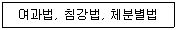

식품산업기사(구) (2003-03-16 기출문제)
1과목: 식품위생학
1. 밀가루의 표백과 숙성에 사용되는 첨가물은?
- 표백제
- 밀가루 개량제
- 탈색제
- 품질 개량제
(정답률: 알수없음)

2. 식품 포장재로부터 이행 가능한 유해 물질이 잘못 연결된 것은?
- 금속포장재 - 납, 주석
- 요업 용기 - 첨가제, 잔존 단위체
- 고무마개 - 첨가제
- 종이포장재 - 착색제
(정답률: 알수없음)
3. 다음은 식품의 위생검사와 관련된 조작법이다. 관계가 가장 깊은 것은?

- 잔류농약의 검사
- 착색료의 검사
- 이물의 검사
- 변질검사
(정답률: 알수없음)
4. 다음 중 유해성 표백료는?
- 둘신(dulcin)
- 롱갈릿(rongalite)
- 아우라민(auramine)
- 붕산(H3BO3)
(정답률: 알수없음)
5. 포도상구균 식중독과 관계가 있는 독소는?
- 엑소톡신(exotoxin)
- 엔테로톡신(enterotoxin)
- 에르고톡신(ergotoxin)
- 프토마인(ptomaine)
(정답률: 알수없음)
6. 잉어가 제2중간 숙주인 기생충은?
- 폐흡충
- 간흡충
- 요충
- 요꼬가와흡충
(정답률: 알수없음)
7. 병에 걸린 동물의 고기를 섭취하거나 병에 걸린 동물을 처리, 가공할 때 감염될 수 있는 인축공통 전염병은?
- 디프테리아
- 폴리오
- 유행성 간염
- 브루셀라병
(정답률: 알수없음)
8. 식품에서 특히 가장 문제되는 방사능 오염물질은?
- 90Sr
- 60Co
- 235Ur
- 238Ue
(정답률: 알수없음)
9. 향료의 사용 목적이 아닌 것은?
- 식품 자체의 냄새를 없앤다.
- 어떤 향을 다른 향으로 바꾼다.
- 식품자체의 향을 강화시킨다.
- 식품자체의 유화성을 향상시킨다.
(정답률: 알수없음)
10. 식물성 식품의 유독물질과 거리가 먼 것은?
- 고시폴(gossypol)
- 솔라닌(solanine)
- 아미그달린(amygdalin)
- 베네루핀(venerupin)
(정답률: 알수없음)
11. 농약에 의한 식품오염의 설명 중 가장 거리가 먼 것은?
- 급성중독을 일으키기도 한다.
- 만성중독은 발생하지 않는다.
- 각종 농약의 식품에서의 잔류 허용량이 정해져 있다.
- 수확직전에 살포해서는 안된다.
(정답률: 알수없음)
12. 독소형 식중독으로 신경마비를 일으키는 원인균은?
- Proteus morganii
- Arizona 균
- Clostridium botulinum
- Vibrio parahaemolytica
(정답률: 알수없음)
13. 알루미늄박에 대한 다음 설명 중 잘못된 것은?
- 고온 살균이 가능하다.
- 지방질 식품의 포장에 적합하다.
- 광선 차단 효과가 크다.
- 방습성이 떨어진다.
(정답률: 알수없음)
14. 미강유 중독사고와 관련이 적은 것은?
- 화학적으로 불안정하여 분해된 Cl 이온물질 때문에 독성의 원인이 된다.
- 탈취공정 중 PCB가 혼입되어 발생하였다.
- 입술과 손톱이 착색된다.
- 인체의 지방조직에 다량 축적된다.
(정답률: 알수없음)
15. 다음 중 연결이 바르게 된 것은?
- LC50 : 시험동물의 50%가 표준 수명기간 중 종양을 생성하게 하는 유독 물질의 양
- LD50 : 노출된 집단의 50% 치사를 일으키는 유독물질의 농도
- TD50 : 노출된 집단의 50% 치사를 일으키는 유독물질의 양
- GRAS : 해가 나타나지 않거나 증명되지 않고 다년간 사용되어 온 식품첨가물에 적용되는 용어
(정답률: 알수없음)
16. 다음 식중독을 일으키는 세균 중 잠복기가 가장 짧은 균주는?
- Salmonella enteritidis
- Staphylococcus aureus
- Escherichia coli 0-157
- Clostridium botulinum
(정답률: 알수없음)
17. 자연독 식품과 독소의 연결이 바르게 된 것은?
- 독미나리 － 시큐톡신(cicutoxin)
- 복어 － 엔테로톡신(enterotoxin)
- 모시조개 － 삭시톡신(saxitoxin)
- 피마자유 － 고시폴(gossypol)
(정답률: 알수없음)
18. BOD 측정시 다음 중 어느 항목이 가장 적합한가?
- 20℃에서 5일간 배양
- 20℃에서 3일간 배양
- 25℃에서 5일간 배양
- 25℃에서 3일간 배양
(정답률: 알수없음)
19. 대장균군의 정성시험 순서가 바르게 된 것은?
- 추정시험-확정시험-완전시험
- 추정시험-완전시험-확정시험
- 완전시험-확정시험-추정시험
- 완전시험-추정시험-확정시험
(정답률: 알수없음)
20. 음용수의 수질 기준에서 조금만 검출되어서도 안되는 것은?
- 염소이온
- 질산성질소
- 일반세균
- 수은
(정답률: 알수없음)
2과목: 식품화학
21. 검정콩, 가지, 포도 등에 공통적으로 들어 있는 색소는?
- 카로티노이드(carotenoid)
- 안토크산틴(anthoxanthin)
- 안토시아닌(anthocyanin)
- 클로로필(chlorophyll)
(정답률: 알수없음)
22. 단백질 분자 내에 티로신(tyrosine)과 같은 페놀(phenol) 잔기를 가진 아미노산의 존재에 의해서 일어나는 정색반응은 다음 중 어느 것인가?
- 밀론(Millon)반응
- 비우렛(Biuret)반응
- 닌히드린(Ninhydrin)반응
- 유황반응
(정답률: 알수없음)
23. 단백질의 기능과 관계가 없는 것은?
- 조직의 성장과 유지
- 호르몬이나 효소의 형성
- 체액의 균형유지
- 지용성 비타민의 흡수촉진
(정답률: 알수없음)
24. 프로비타민(provitamin) A가 되는 것은?
- β -carotene
- lycopene
- lutein
- zeaxanthin
(정답률: 알수없음)
25. 식품의 기호성과 관계가 가장 적은 것은?
- 소성
- 점성
- 탄성
- 경도
(정답률: 알수없음)
26. 조리, 가공시 효소에 의해 갈변을 일으키는 식품은 어느것인가?
- 홍차의 갈변
- 식빵의 갈변
- 간장의 갈변
- 불고기의 갈변
(정답률: 알수없음)
27. 오이김치의 갈변원인을 설명한 것 중 옳은 것은?
- 오이 중에 함유된 무기질과 엽록소가 결합하기 때문이다.
- 발효 때 엽록소와 구리의 결합 때문이다.
- 발효 때 생성된 초산과 젖산이 엽록소에 작용하기 때문이다.
- 발효 때 생성된 탄산가스 때문이다.
(정답률: 알수없음)
28. 기초대사량에 영향을 주는 요소가 아닌 것은?
- 체중
- 체표면적
- 성별
- 직업
(정답률: 알수없음)
29. 향기의 주성분이 황을 함유하는 식품은?
- 무
- 계피
- 커피
- 박하
(정답률: 알수없음)
30. 유지를 진공 또는 CO2 , N2 등 산소가 없는 상태에서 200-300℃로 가열하면 일어나는 반응은?
- 자동산화
- 열중합
- 생화학적 산패
- 변향
(정답률: 알수없음)
31. O/W형 유화액(emulsion)에 속하는 예가 아닌 것은?
- 우유
- 마가린
- 마요네즈
- 아이스크림
(정답률: 알수없음)
32. 밀감 통조림에서 백탁(白濁)의 원인이 되는 성분은?
- 나린진(naringin)
- 루티노스(rutinose)
- 헤스페리딘(hesperidin)
- 카로티노이드(carotenoid)
(정답률: 알수없음)
33. 유지의 자동산화 속도가 가장 큰 지방산은?
- 스테아린산(stearic acid)
- 올레산(oleic acid)
- 리놀렌산(linolenic acid)
- 리놀레산(linoleic acid)
(정답률: 알수없음)
34. 포도당의 중합체가 아닌 것은?
- 아밀로오스(amylose)
- 글리코겐(glycogen)
- 섬유소(cellulose)
- 이눌린(inulin)
(정답률: 알수없음)
35. 육류나 어류의 선도가 저하되었을 때 발생하는 냄새성분 중 틀린 것은?
- 암모니아(ammonia)
- 메틸머캡탄(methylmercaptane)
- 아크롤레인(acrolein)
- 트리메틸아민(trimethylamine)
(정답률: 알수없음)
36. 액체 속에 기체가 분산된 콜로이드 식품은?
- 아이스크림
- 맥주
- 우유
- 젤리
(정답률: 알수없음)
37. 요오드의 결핍증은?
- 갑상선종
- 빈혈
- 구루병
- 골연화증
(정답률: 알수없음)
38. 전분의 호화에 영향을 주는 요인이 아닌 것은?
- 전분의 종류
- 산소
- 전분입자의 수분함량
- pH
(정답률: 알수없음)
39. 요오드 정색반응에 청색을 나타내는 덱스트린(dextrin)은 어느 것인가?
- 아밀로덱스트린(amylodextrin)
- 에리스로덱스트린(erythrodextrin)
- 아크로모덱스트린(achromodextrin)
- 말토덱스트린(maltodextrin)
(정답률: 알수없음)
40. 다음의 소화효소 중 췌장에서 분비되는 것이 아닌 것은?
- 펩신(pepsin)
- 트립신(trypsin)
- 아밀롭신(amylopsin)
- 스테압신(steapsin)
(정답률: 알수없음)
3과목: 식품가공학
41. 신선한 계란의 등급 결정과 관계가 먼 것은?
- 난각의 상태
- 계란의 비중
- 기실의 크기
- 난황의 색깔
(정답률: 알수없음)
42. 통조림 살균시 Z값에 관하여 가장 알맞게 표현된 것은?
- 이 값이 클수록 온도 상승에 따른 살균효과가 적다.
- 사멸율의 10배 변화에 상당하는 가열시간의 변화량이다.
- 일정한 농도의 미생물의 250℉ 때의 치사점이다.
- 치사 시간을 대수로 나타낸 값이다.
(정답률: 알수없음)
43. 보통두부 제조공정과 비교하여 전두부 제조공정에서 생략되는 공정은?
- 증자
- 여과
- 탈수
- 성형
(정답률: 알수없음)
44. 육제품의 훈연의 목적이 아닌 것은?
- 방부작용에 의한 저장성 증가
- 항산화작용에 의한 산화방지
- 훈연취 부여에 의한 풍미의 개선
- 훈연에 의한 수분증발로 육질이 질겨짐
(정답률: 알수없음)
45. 통조림 제조에 있어서 탈기의 목적과 거리가 먼 것은?
- 관 내면 부식 억제
- 혐기성세균의 발육 억제
- 내용물의 향미와 색깔 저하 방지
- 내용물의 영양가 저하 방지
(정답률: 알수없음)
46. 유지를 채취할 때 주의점과 거리가 먼 것은?
- 불순물이 없는 좋은 유지를 얻을 것
- 고유의 향기를 유지하면서 얻을 것
- 공정의 경제성이 허용하는 한 채유율을 높일 것
- 부가 가치가 높은 유박을 얻을 것
(정답률: 알수없음)
47. 두류의 가공에서 코오지(Koji)를 만드는 가장 중요한 목적은?
- 알콜을 생성시킨다.
- 전분을 당화시킨다.
- 강력한 효소를 생성시킨다.
- 소화와 흡수를 높여준다.
(정답률: 알수없음)
48. 무발효빵 제조시 사용되는 팽창제와 관계 없는 것은?
- 과붕산나트륨
- 탄산수소나트륨
- 탄산암모늄
- 주석산수소칼륨
(정답률: 알수없음)
49. 아이스크림 제조에 있어서 믹스 10ℓ의 무게가 9kg이고 만들어진 아이스크림 10ℓ의 무게가 5kg 일 때의 증량율(overrun)은?
- 70%
- 80%
- 90%
- 95%
(정답률: 알수없음)
50. 식품을 포장하는 목적이 아닌 것은?
- 취급을 편리하게 하기 위하여
- 상품가치를 향상시키기 위하여
- 내용물의 맛을 변화시키기 위하여
- 식품의 변패를 방지하기 위하여
(정답률: 알수없음)
51. 유황훈증법에 의한 건조과일 제조시의 설명으로 부적당한 사항은?
- 옥시다아제(oxidase) 등의 산화효소를 파괴시킨다.
- 불쾌취를 제거한다.
- 미생물 억제효과가 있다.
- 과육의 갈변을 방지하여 색깔을 유지시켜 준다.
(정답률: 알수없음)
52. 제빵시 반죽할 때 가스빼기를 하는 목적과 가장 거리가 먼 것은?
- 당을 고르게 분포시켜 효모의 활동을 왕성하게 한다.
- 탄산가스를 배출하고 신선한 공기를 공급한다.
- 빵의 외형을 양호하게 한다.
- 반죽의 내외 온도 분포를 고르게 한다.
(정답률: 알수없음)
53. 다음 중 발효시켜 만든 알 가공품은?
- 마요네즈
- 피단
- 아이스크림
- 달걀가루
(정답률: 알수없음)
54. 샐러드유 제조시 저온처리(winterization)하는 가장 중요한 이유는?
- 융점이 높은 중성지방 제거
- 레시틴 제거
- 비누층 제거
- 착색물질 제거
(정답률: 알수없음)
55. 잼을 제조할 때 젤리점(jelly point)을 결정하는 방법이 잘못된 것은?
- 나무주걱으로 시럽을 떠서 흘러내리게 하여 주걱 끝에 젤리모양으로 굳은 채로 떨어지는 것을 시험하는 스푼법(spoon test)
- 끓는 시럽의 온도가 104∼1⑤℃가 되었는지 온도계로 측정
- 당도계로 당도가 55% 정도가 되는 점을 측정
- 농축액을 찬물이 든 유리컵에 소량 떨어지게 하여 밑바닥까지 굳은 채로 떨어지는지를 조사하는 컵법(cup test)
(정답률: 알수없음)
56. 우유가 단맛을 약간 가진 것은 어떤 성분 때문인가?
- 나이아신
- 리파아제
- 포도당
- 유당
(정답률: 알수없음)
57. 자연치즈의 숙성도와 관련이 깊은 성분은?
- 수용성 질소
- 유리 지방산
- 유당
- 카르보닐 화합물
(정답률: 알수없음)
58. 제빵시 가장 높은 온도에서 일어나는 반응은?
- 캐러멜화
- 글루텐의 응고
- 가스 팽창
- 효모활성의 증대
(정답률: 알수없음)
59. 과즙 청징에 사용되는 효소는?
- 에스테라아제(esterase)
- 프로테아제(protease)
- 펙티나아제(pectinase)
- 아밀라아제(amylase)
(정답률: 알수없음)
60. 간장을 달이는 목적 중 가장 중요한 것은?
- 살균을 하기 위해서
- 색택을 내기 위해서
- 맛을 좋게 하기 위해서
- 향기를 내기 위해서
(정답률: 알수없음)
4과목: 식품미생물학
61. Botrytis 속에 대한 설명 중 옳은 것은?
- 배에 번식하여 단맛이 감소한다.
- 사과에 번식하여 신맛이 감소한다.
- 포도에 번식하면 신맛이 감소하고 단맛이 상승한다.
- 채소류에 번식하여 고사시킨다.
(정답률: 알수없음)
62. 그램(gram) 염색에 사용되지 않는 시약은?
- safranin 액
- lugol 액
- methylene blue
- crystal violet
(정답률: 알수없음)
63. 방선균에 대한 설명으로 옳지 못한 것은?
- 항생물질을 생산하는 종이 많다.
- 진핵세포 생물이다.
- 주로 토양에 서식하며 흙 냄새의 원인균이다.
- 균사상으로 발육하는 세균이다.
(정답률: 알수없음)
64. 장류제조시 코오지(koji)균으로 요구되는 조건이 아닌것은?
- 프로테아제(protease) 및 아밀라아제(amylase) 효소활성이 강해야 한다.
- 아플라톡신(aflatoxin)을 생성해야 한다.
- 포자형성이 왕성하며 제국이 용이해야 한다.
- 장류의 향과 맛이 좋아야 한다.
(정답률: 알수없음)
65. 미생물 세포벽의 기능이 아닌 것은?
- 삼투압에 저항한다.
- 외부 충격으로부터 완충작용을 한다.
- 세포의 고유한 모양을 유지한다.
- 에너지를 합성한다.
(정답률: 알수없음)
66. 일반적으로 조류는 세포내 엽록체를 갖고 광합성을 한다. 다음 중 특정의 엽록체가 없고 세포 전체에 엽록소가 분산되어 있는 것은?
- 녹조류
- 홍조류
- 남조류
- 연두벌레 식물류
(정답률: 알수없음)
67. 상면효모와 하면효모를 설명한 것 중 틀린 것은?
- 상면효모의 발효액은 투명하다.
- 상면효모는 소량의 효모점질물 polysaccharide를 함유한다.
- 하면효모는 발효작용이 늦다.
- 하면효모는 균체가 산막을 형성하지 않는다.
(정답률: 알수없음)
68. 버섯이 형성하는 포자는?
- 자낭 포자
- 접합 포자
- 담자 포자
- 난포자
(정답률: 알수없음)
69. 포도주에 철분이 용해되어 미치는 영향은?
- 색이 좋아진다.
- 혼탁의 원인이 된다.
- 여과를 용이하게 한다.
- 맛이 좋아진다.
(정답률: 알수없음)
70. 제빵에 사용하는 균주는?
- Acetobacter aceti
- Saccharomyces oleaceus
- Saccharomyces cerevisiae
- Acetobacter xylinum
(정답률: 알수없음)
71. 육류의 표면을 착색시키는 세균과 색소가 바르게 짝지워진 것은?
- Serratia marcescens - 적색
- Pseudomonas fluorescens - 청색
- Staphylococcus aureus - 녹색
- Micrococcus varians - 흑색
(정답률: 알수없음)
72. 맥주 제조시 첨가되는 호프(Hop)의 효과로 잘못된 것은?
- 맥주 특유의 향미를 부여한다.
- 저장성을 높인다.
- 맥주의 거품에 관계한다.
- 효모의 증식을 촉진시켜 알콜 농도를 높인다.
(정답률: 알수없음)
73. 액체의 표면에 피막을 형성하는 산막 효모로만 짝지워진 것은?
- Pichia속 - Debaryomyces속
- Saccharomyces속 - Hansenula속
- Hanseniaspora속 - Candida속
- Debaryomyces속 - Candida속
(정답률: 알수없음)
74. 위균사형으로 사료효모나 이노신산(inosinic acid)의 제조 원료로 사용되는 효모는?
- Aspergillus oryzae
- Aspergillus flavus
- Candida utilis
- Penicillium expansum
(정답률: 알수없음)
75. 일반적인 균체내 효소추출 방법으로 적당치 않는 것은?
- 초음파쇄법
- 자기소화법
- 동결융해법
- 열추출법
(정답률: 알수없음)
76. 종초(種酢)가 갖추어야 할 조건에 해당되지 않는 것은?
- 내구성이 강해야 한다.
- 산의 생성속도와 양이 좋아야 한다.
- 초산을 산화분해해야 한다.
- 방향성 에스테르와 불휘발산을 생성해야 한다.
(정답률: 알수없음)
77. 젖산균의 특징이 아닌 것은?
- 포자를 형성한다.
- 영양요구성이 복잡하다.
- 카탈라아제(catalase) 활성은 음성을 나타낸다.
- 당류를 발효시켜서 젖산을 형성한다.
(정답률: 알수없음)
78. 조상균류(Phycomycetes)에 속하는 곰팡이는?
- Fusarium 속
- Eremothecium 속
- Mucor 속
- Aspergillus 속
(정답률: 알수없음)
79. 전자 및 전리 방사선이 미생물을 살균시키는 이유는?
- 단백질의 파괴
- 탄수화물의 파괴
- RNA 의 파괴
- DNA 의 파괴
(정답률: 알수없음)
80. 글루탐산(glutamic acid)을 생산하는 경우 생육인자로 요구되는 성분은?
- 비오틴(biotin)
- 티아민(thiamine)
- 페니실린(penicillin)
- 올레산(oleic acid)
(정답률: 알수없음)